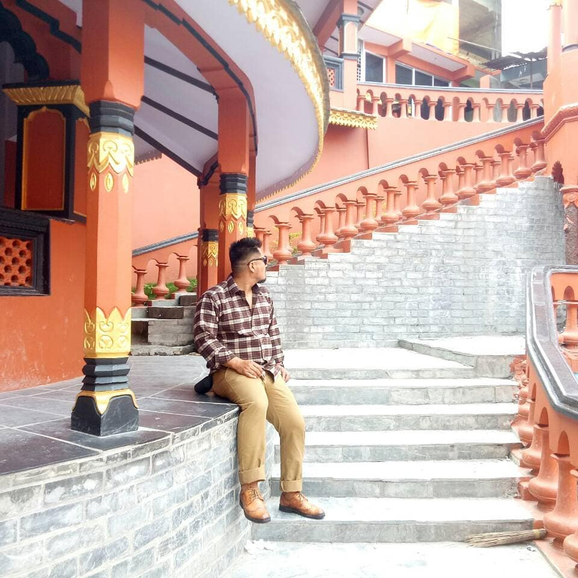
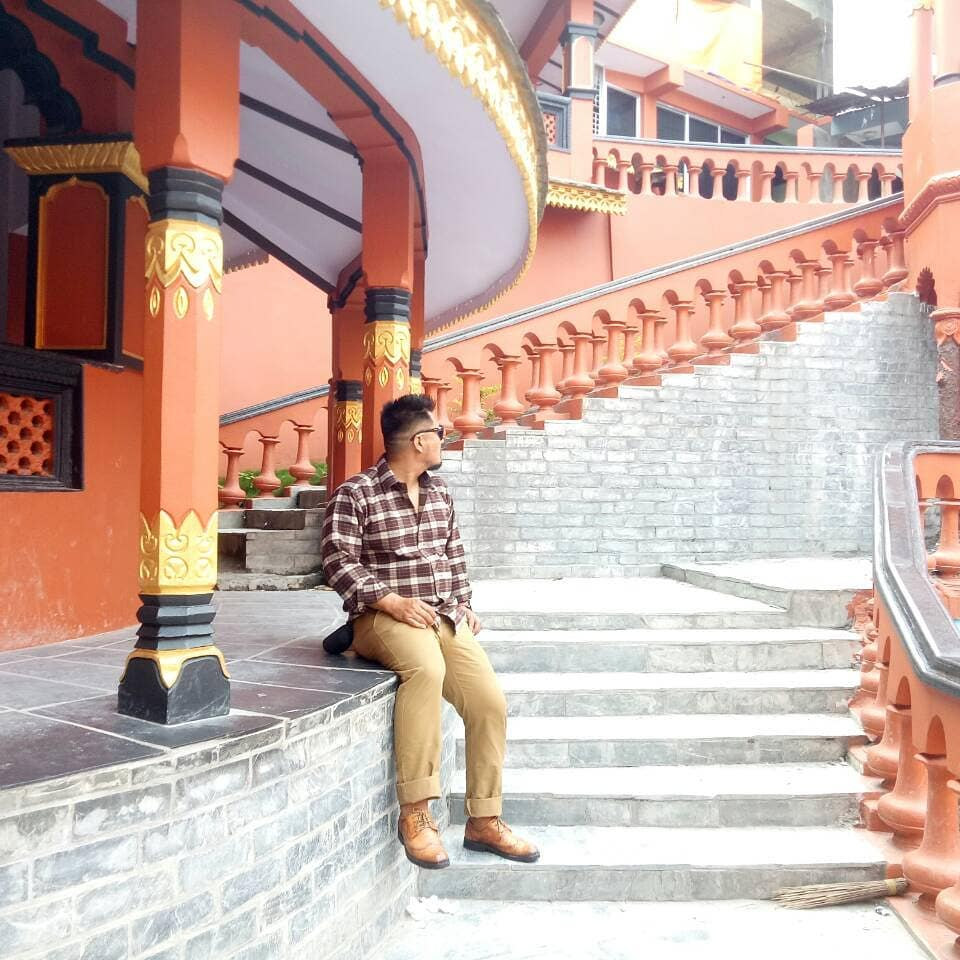

Experience
Success is never found. Failure is never fatal. Courage is
the only thing.
- Winston Churchill
Yogesh Gurung has been successful in collecting the diverse work experience. Starting career as junior developer in the software companies to the operation manager in the companies. He has also worked as outdoor staff as a trekking guide and professional mountain guide in the HImalayas.
He actively volunteered the Nepalese community as a social worker. He also successfully established the non profit organisation and ran different social activities to support the community.
Career as Programmer
Yogesh Gurung is curious about information technology. He started to learn the multimedia in multimedia course offered in the education institute since 2007. He further invested his self study in programming languages. He actively studied the multimedia and programming language in online sources and university courses.
He is experienced with the programming languages such as JavaScript, PHP, Java and Python and its frameworks such as React JS, Vue JS, Angular JS, Laravel, Spring and Django. He designs and develops dynamic web applications using both RDMS and NoSQl databases.He is also interested in machine learning and artificial intelligence. He enjoys designing and prototyping the projects of web pages and mobile applications using Figma and Adobe XD.
Career as Mountaineer
Born in the lap of himalaya, Yogesh always dreamed of conquering the summit of the snow white peaks. He actively participated in the sports and kept himself fit for mountain expeditions. He started different activities to support himself as a mountain climber. He participated in the training sessions conducted by mountaineering associations.
He started to climb the mountains in the year 2016 and successfully ascended the 7,000 meters high mountian, Mt Amadablam. He also climbed Mt. Lobuche, Mt. Island peak, Mt. Lobuche and Mt. Pokalde. After the continuous effort of climbing practise and training session of mountaineering association. He is certified to guide the climbers in the Himalaya as a professional mountain climber.
Career as Adminstrator
Yogesh had worked as successful operation manager in the “Adventure milestone company”. His field knowledge and academic knowledge provided him opportunity to run the adventure company. Knowledge of information technology is very crucial and advantage to run a sound business. This hand on knowledge of IT and climbing skill helped him to be the successful operation manager in the Adventure company.
Some Gallery


 
